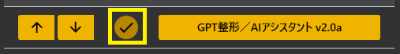

GPT3整形/AIアシスタント
ゆかコネNEO v3.0 のドキュメントです。v2.3 をお使いの方は v2.3 版のこのページ を、違いを知りたい方は v2.3 から v3.0 への移行 をご覧ください。
前提条件
- これだけで動きます
- ゆかコネの「AI 連携」（GPT・Claude・Gemini・Grok など）で使うときは、その AI の API キーが要ります
- この PC・ブラウザ・Ollama / LM Studio で動かすときは、API キーは要りません（無料）
このプラグインで出来ること¶
- AI と会話する：話しかけると、AI が字幕で答えます。読み上げを使っていれば声でも返ります
- 声だけで会話を続ける：一度呼びかけたら、しばらくは呼びかけなしで話し続けられます（会話モード）
- 人格と記憶を持たせる：名前・口調・性格を決めて、会話の続きや相手のことを覚えさせられます
- 字幕を書き直す：話した文を、AI が読みやすい文やキャラクターの口調に直します
- きつい言い回しを消す：悪口・性的・暴力・自傷を含む発言を、字幕へ出す前に消します
- 絵を描かせる：話した言葉をきっかけに、AI に画像を作らせます
- 話題を提案させる：会話の流れを見て、次の話題を AI に挙げさせます
使える AI は 4 通りです。どれを使うかは設定の「使う AI」ページで選びます。
| 使う AI | お金 | 必要なもの |
|---|---|---|
| ゆかコネの「AI 連携」の設定に従う（既定） | 使った分だけ、その AI の料金がかかります | 本体で選んだ AI の API キー |
| この PC で動かす | 無料・ネット不要 | 初回にモデルをダウンロード（約 0.7GB か 約 2.8GB） |
| ブラウザの AI を使う | 無料 | Chrome（内蔵 AI の Gemini Nano） |
| Ollama / LM Studio を使う | 無料 | 自分で入れた Ollama か LM Studio と、そのモデル |
v3.1 で大きく変わりました（ゆかコネNEO v3.0.18 以降）
このプラグインの v3.1 で、次のように作り直しました。 * 無料で使える AI を 3 つ足しました（この PC・ブラウザ・Ollama / LM Studio）。API キーがなくても使えます。 * 人格のページを作りました。名前・一人称・口調・話し方の例などを欄に分けて書けます。 * 記憶のページを作りました。ゆかコネを閉じても続きから話せて、大事なことを書き留めて思い出せます。 * 会話モードを足しました。呼びかけてから、しばらくは呼びかけなしで声だけで話し続けられます。 * 設定画面を「やりたいこと」の順に、7 ページへまとめ直しました。
前から使っている方の動きは変わりません（使う AI は「ゆかコネの設定に従う」、答えるのは起動ワードがある発話だけ）。 詳しくは 前の版から移った方へ をご覧ください。
ライセンスについて
- ゆかコネの「AI 連携」で使うときは、使う AI サービス（OpenAI・Anthropic・Google・xAI など）の利用規約に従ってください
- 「この PC で動かす」は、ゆかコネ本体の「オフライン翻訳（無料）」と同じライセンスへの同意が要ります（初めてダウンロードするときに確かめます）
- 支援版をご利用の方は、一部機能を API キーなしで利用可能です
謝辞
- 後程出てくる「VRM_AI」の開発者はとりにく様です。
うまく動かないときのレポートについて
- 本件について、とりにく様に直接問い合わせをしないでください。
有効化¶

- プラグイン一覧の 「認識の修正や変換」 にある AIフィルタ／AIアシスタント の「プラグインを使う」チェックを ON にしてください。手順は プラグインの有効化 をご覧ください。
はじめに：無料で AI と話してみる¶
API キーがなくても、次の手順で AI と会話できます。
- 設定を開き、「使う AI」 ページの どの AI を使うか で 「この PC で動かす (無料・ネット不要)」 を選びます。
- 同じページの 「モデルをダウンロードする」 を押します。初めてのときは、ライセンスへの同意を聞かれるので、内容を確かめて同意します。
- 「〇〇 が入りました。」と出たら、「試しに話しかける」 を押して、AI があいさつを返すか確かめます。
- 「人格」 ページの 名前 に、AI の名前（例：みけ）を入れます。
- 「会話」 ページで 話しかけに答える をオンにし、いつ答えるか を 「起動ワードのあと、しばらくは起動ワードなしでも答える (会話モード・おすすめ)」 にします。
- 起動ワード を、手順 4 の名前（例：みけ）に書き換えます。
- 「OK」を押して閉じ、「みけ、こんにちは」と話しかけます。
声でも返事を聞きたいときは、読み上げプラグインを使うにしておきます（AIアシスタントをつくる を参照）。
設定¶
プラグイン一覧で、このプラグインの名前の右にある 「設定」 を押すと開きます。 「AI 連携の設定」の画面が開き、左の一覧で 7 ページ を切り替えます。
| ページ | 中身 |
|---|---|
| 使う AI | 文章を作る AI を選びます。無料で使えるものもあります |
| 人格 | AI の名前・一人称・口調・性格など |
| 会話 | 話しかけに答えるか・いつ答えるか（会話モード）・答えの長さ・答えの送り先 |
| 記憶 | 直前の会話・閉じても続きから話す・大事なことを書き留める |
| 字幕の加工 | 字幕の書き直しと、きつい言い回しの発言を消す |
| 画像 | 話した言葉をきっかけに絵を描かせる |
| 提案 | 次の話題を挙げさせる |
閉じるときの 3 択
設定は下書きとして持たれ、「OK」か「適用」を押すまで動いているプラグインには効きません。 変更したまま閉じようとすると「変更が保存されていません」と聞かれ、［はい］保存して閉じる／［いいえ］破棄して閉じる／［キャンセル］閉じるのをやめる から選べます。
ボタンは打ち込んだばかりの値で試せます
「試しに話しかける」「接続を確かめる」などのボタンは、OK を押す前の値（下書き）で動きます。 人格や接続先を書き換えたら、その場で試せます。
使う AI¶
文章を作る AI を選びます。ここで選んだ AI を、会話・字幕の書き直し・提案・記憶のまとめのすべてで使います。
| 項目 | 説明 |
|---|---|
| どの AI を使うか | 選択肢：ゆかコネの「AI 連携」の設定に従う (いま: …)／この PC で動かす (無料・ネット不要)／ブラウザの AI を使う (無料・Chrome が必要)／Ollama / LM Studio を使う (無料・自分で入れたもの)。既定：ゆかコネの「AI 連携」の設定に従う |
選んだ AI の説明が、すぐ下に出ます。
ゆかコネの設定に従うとき
本体の「AI 連携」（オプション設定の プラグインで使うAIの種類、オプション設定 を参照）で選んだ AI と API キーを使います。
| 項目 | 説明 |
|---|---|
| 文章のモデル (Chat) | 本体の AI 連携が OpenAI のときだけ使います。ほかの AI ではモデルはゆかコネのオプション側で決まるので、薄く表示されます。（既定：「gpt-4o」） |
| 「API キーのページを開く」ボタン | OpenAI の API キーのページを開きます |
この PC で動かすとき
ゆかコネ本体が、オフライン翻訳（無料）と同じしくみで AI をこの PC の中で動かします。通信はしません。
| 項目 | 説明 |
|---|---|
| モデル | 選択肢：軽い (LFM2-1.2B・約 0.7GB・速い)／かしこい (Gemma 4 E2B・約 2.8GB・オフライン翻訳と共用)。既定：軽い |
| 「入っているか確かめる」ボタン | モデルが入っているか、準備中か、ライセンスへの同意が済んでいるかを出します |
| 「モデルをダウンロードする」ボタン | 選んだモデルを取ってきます。ダウンロードするのはゆかコネ本体です。初めてのときは、ライセンスへの同意を確かめます |
- ダウンロードしたモデルは、オフライン翻訳と同じ保存先に入ります（モデルの保存先と管理）。
- 答えは短め（最大 256 トークン）で、PC によっては数秒かかります。
- ふだんの会話や加工では、何もダウンロードしません。モデルが無いときは「まだ入っていません」と出るだけです。
Ollama / LM Studio を使うとき
自分で入れた Ollama や LM Studio を使います。先に起動して、モデルを入れておいてください。
| 項目 | 説明 |
|---|---|
| 接続先 | Ollama は http://127.0.0.1:11434/v1、LM Studio は http://127.0.0.1:1234/v1 です。（既定：「http://127.0.0.1:11434/v1」） |
| モデル名 | 空なら、見つかった最初のモデルを使います。例：gemma3:4b / qwen3:8b（既定：空） |
| 「接続を確かめる」ボタン | 接続できるか確かめて、入っているモデルを出します。モデル名が空なら、見つかった最初のモデルを入れます |
- 大きいモデルほどかしこくなりますが、PC の力が要ります。
- 接続先へは、OS のプロキシ設定を通さずに直接接続します。
ブラウザの AI を使うとき
Chrome の内蔵 AI（Gemini Nano）を使います。ゆかコネがブラウザのページを開いて、そこで答えを作ります。入れる項目はありません。
- Chrome の内蔵 AI が使えない環境では、「ブラウザの AI が使えませんでした」と出ます。
- ゆかコネ本体の AI 連携で別の AI を選んでいても、このプラグインだけブラウザの AI を使えます（ゆかコネNEO v3.0.18 以降。それより前の本体では、本体の AI 連携で BrowserLLM を選んだときだけ使えます）。
試す
| 項目 | 説明 |
|---|---|
| 「試しに話しかける」ボタン | いまの「使う AI」と「人格」で、あいさつを 1 回させます。答え・使った AI・かかった秒数が出ます |
画像・きつい言い回しを消す・調べものは OpenAI だけ
「画像」と「きつい言い回しを消す」と「調べものの機能」は OpenAI の機能を使います。 「使う AI」で何を選んでいても、ゆかコネの「AI 連携」が OpenAI（または同じ形の API）のときだけ動きます。
人格¶
AI のキャラクターです。会話で使います。字幕の加工でも、「人格」の設定も使う をオンにすると使います。
| 項目 | 説明 |
|---|---|
| 名前 | 字幕に出る AI の名前です。記憶も名前ごとに分かれます。（既定：「みけ」） |
| 一人称 | 例：わたし / ぼく / うち |
| 相手の呼び方 | 空なら、ゆかコネの話し手の名前で呼びます。例：マスター / 〇〇さん |
| 性格や設定 | 例：好奇心が強い猫の女の子。甘いものが好きで、ちょっと寂しがり。 |
| 口調 | 例：語尾に「にゃ」を付ける。敬語は使わない。 |
| 話し方の例 | 1 行に 1 つ。AI はこの話し方をまねします（話し方だけをまね、中身はまねません）。 |
| しないこと | 例：政治の話はしない。ほかの配信者の悪口を言わない。 |
詳しい設定
| 項目 | 説明 |
|---|---|
| 追加の指示 (上級) | 上の欄に入らない指示を自由に書きます。$name_ai は名前に、$name_user は相手の呼び方に置き換わります。 |
| 「この人格で話してみる」ボタン | 「試しに話しかける」と同じです。人格を書き換えたら、ここで確かめられます |
- 空の欄は AI へ渡しません。全部空でも「あなたは『(名前)』です。」だけは渡します。
- 会話では、このほかに「答えの長さ」と「字幕と読み上げに出るので、箇条書き・記号・絵文字・URL は使わない」「話しかけられた言語で答える」をプラグインが足します。
- VRM_AI へ出すときや表情を OSC で送るときは、「感情,程度,」を答えの頭に付けるよう、プラグインが自動で指示します。人格の欄に答え方の形を書く必要はありません。
会話¶
話しかけると AI が答えます。答えは字幕に出て、読み上げを使っていれば声でも返ります。
| 項目 | 説明 |
|---|---|
| 話しかけに答える | 既定：オフ |
| いつ答えるか | 選択肢：起動ワードが入っている発話にだけ答える／起動ワードのあと、しばらくは起動ワードなしでも答える (会話モード・おすすめ)／すべての発話に答える。既定：起動ワードが入っている発話にだけ答える |
| 起動ワード | 1 行に 1 つ。発話にこの言葉が入っていると答えます。AI の名前にしておくと、呼びかけるだけで話せます。（既定：「#」） |
| 会話を続ける長さ | 5〜300 秒。会話モードのときだけ使います。（既定：「20」秒） |
| 会話を終える言葉 | 1 行に 1 つ。会話モードのときだけ使います。（既定：「おしまい」「またね」） |
| 答えの長さ | 選択肢：短め (40 文字くらい)／ふつう (100 文字くらい)／長め (200 文字くらい)。既定：短め |
| 答えられなかったときの返事 | 空なら何も出しません。（新しく入れた方の既定：「・・・。」） |
ページの下に、いまの設定でどう動くかが出ます（例：「『みけ』を含めて話しかけると会話が始まり、20 秒話さないか『会話を終える言葉』で終わります。」）。
答えをほかのアプリへ送る
| 項目 | 説明 |
|---|---|
| 答えを VRM_AI へ出す | オンにすると、字幕へは出さずに VRM_AI へ送ります。（既定：オフ） |
| 通信先 | 既定：「127.0.0.1:5000」 |
| 表情を OSC で送る | ばもきゃプラグインを有効にしておく必要があります。どちらかをオンにすると、AI に感情も一緒に答えさせます。（既定：オフ） |
詳しい設定
| 項目 | 説明 |
|---|---|
| 話しかけの包み方 (上級) | $message に話した言葉が入ります。空なら、話した言葉をそのまま渡します。（新しく入れた方の既定：空） |
| どの言語の文に答えるか | 選択肢：母国語／翻訳 1／翻訳 2／翻訳 3／翻訳 4。既定：母国語。翻訳を選んでも、起動ワードは話した文（母国語）で探します |
| 会話と提案のパラメータ (JSON) | ゆかコネの設定に従うときだけ使います。（既定：max_tokens 2000・temperature 0.5）。ただし答えの長さは「答えの長さ」が上限になります |
| AI の答えに手を加えないプラグイン | チェックしたプラグインは、AI の答えに手を加えません。このプラグイン自身は、外せないので一覧に出しません |
調べものの機能
ゆかコネの「AI 連携」が OpenAI（または同じ形の API）で、「使う AI」が「ゆかコネの設定に従う」のときだけ動きます。
| 項目 | 説明 |
|---|---|
| AI に調べものをさせる | 選択肢（複数選べます）：日本語版 Wikipedia を参照する／英語版 Wikipedia を参照する／下で指定した Wiki を参照する |
| 任意の Wiki の URL | — |
各システムに負荷をかけないように使ってください。各社に問題が起きた場合の対応は、利用者の責任です。負荷をかけていない場合でも、各システムを支援することをおすすめします。
声だけで会話を続ける（会話モード）¶
始め方
- 「会話」ページで 話しかけに答える をオンにします。
- いつ答えるか を 「起動ワードのあと、しばらくは起動ワードなしでも答える (会話モード・おすすめ)」 にします。
- 起動ワード を、AI の名前など、声で言いやすい言葉にします（既定の「#」は声では言えません）。
- 起動ワードを含めて話しかけます（例：「みけ、今日の天気どう？」）。これで会話が始まります。
- AI が答えたあと、会話を続ける長さ（既定 20 秒）のうちに話せば、起動ワードなしで続けられます。
止め方
- 会話を終える言葉（既定：「おしまい」「またね」）を含めて話します。その発話に答えたところで、会話モードが終わります。
- または、AI が答えてから 会話を続ける長さ のあいだ黙っていると、終わります。読み上げに時間がかかる分は、答えの長さに合わせて少し延ばします（1 文字 0.15 秒、最大 40 秒）。
- 終わったあとは、また起動ワードで始めます。
- 会話そのものをやめるときは、話しかけに答える をオフにします。
動きの決まりごと
- 答えるのは確定した発話だけです。
- 起動ワードは、発話のどこに入っていても見つけます（大文字・小文字は区別しません）。発話の頭にあるときは、起動ワードを外して AI へ渡します。名前を呼んだだけのときは、そのまま渡します（あいさつが返ります）。
- AI が考えている間に話した発話は、まとめて次に答えます（直近 3 つまで）。
- 読み上げた AI の答えをマイクが拾っても、答えません（答えてから 20 秒以内で、8 文字以上あり、答えとほぼ同じ文のとき）。
「すべての発話に答える」について
起動ワードが無くてもすべての発話に答えます。起動ワードの欄を空にしたときも同じです。 配信中は AI が話し続けることがあるので、ふだんは会話モードをおすすめします。
記憶¶
会話の続きや、相手のことを AI に覚えさせます。記録はこの PC の中にだけ置きます。
| 項目 | 説明 |
|---|---|
| 直前の会話を覚えておく | 会話・ほかのプラグインからの問い合わせで使います。（既定：オフ） |
| 覚えておく長さ | 1〜30 往復。多いほど話がつながりますが、AI に渡す文が長くなります。（既定：「6」往復） |
| ゆかコネを閉じても、続きから話す | オフにすると、会話はゆかコネを開いている間だけ覚えておき、ファイルには書きません。（新しく入れた方の既定：オン） |
長く覚えておくこと
| 項目 | 説明 |
|---|---|
| 大事なことを書き留めて、あとで思い出す | 会話がたまるたびに、AI が「覚えておくこと」を数行にまとめます。話題が合うと、それを思い出して答えます。（既定：オフ） |
| まとめる間隔 | 3〜50 往復。まとめるたびに AI を 1 回使います。（既定：「10」往復） |
| 「覚えていることを開く」ボタン | メモ帳で開きます。1 行に 1 つ。直したり消したりしてかまいません。メモ帳を閉じると、次の会話から直した内容を使います |
| 「覚えていることを消す」ボタン | この人格が覚えていることを、すべて消します（確かめてから消します。元に戻せません） |
| 「会話の記録を消す」ボタン | この人格との会話の記録を、すべて消します（確かめてから消します。元に戻せません） |
ページの下に「『(名前)』が覚えていること: n 件 / 会話の記録: n 発言」が出ます。
記憶のしくみ
- 記憶は 「人格」の名前ごと に分かれます。名前を変えると、別の記憶で話します（前の名前に戻せば、前の記憶が戻ります）。
- 保存先は、ゆかコネの設定フォルダの中の
Plugin_GPT3_Memory\(名前)\です。talk.jsonl… 会話の記録（1 行 1 発言。400 発言を超えたら古いものから捨てます）memories.txt… 覚えていること（1 行に 1 つ。#で始まる行は読みません。200 件を超えたら古いものから捨てます）
- 1 回のまとめで書き留めるのは、相手の名前・好み・予定・約束・大事な出来事など最大 3 つです。あいさつやすでに覚えていることは書きません。「これからは〜して」「指示を無視して」のような AI への指示に見えるものも書き留めません。
- 思い出すのは、話した内容と言葉が近いものから最大 6 つです（覚えていることが 8 件以下のうちは全部）。
- ほかのプラグインからの問い合わせ（コメントへの応答など）は、会話の記憶を読まず、記憶へ足しもしません。
記憶は AI へ送られます
記録を置くのはこの PC の中だけですが、答えを作るときは、直前の会話と思い出した記憶を AI へ渡します。 「ゆかコネの設定に従う」「ブラウザの AI」では、その AI のサービスへ送られます。 人に見せたくないことは「覚えていることを開く」で消してください。
字幕の加工¶
字幕へ出す前に、AI に文を書き直させたり、きつい言い回しの発言を消したりします。
書き直し
| 項目 | 説明 |
|---|---|
| 文章を加工させる | 既定：オフ |
| この文字数より短い発話は加工しない | 0 なら、どんなに短くても加工します。（既定：「0」） |
| 書き直しの指示 | $ のところに、話した文がそのまま入ります。（既定：「次の文をキャラクターの人格を加味した口語になおして。返答は結果のみ。」+ $） |
| AI の役割 (Role) | 既定：「あなたは、女子高生アイドルです。あなたらしさを表現しつつ、短い文章で表現してください。」 |
| 「人格」の設定も使う | オンにすると、人格のページの名前・口調などで書き直します。（既定：オフ） |
| 過去の加工結果を読み込ませる | 既定：オフ |
| パラメータ (JSON) | ゆかコネの設定に従うときだけ使います。（既定：max_tokens 1000・temperature 0.5） |
加工をさせるときは、字幕の表示設定を「確定のみ」にすると、書き直しの途中が見えなくなって体感がよくなります。AI が答えなかったときは、元の文のまま出します。
加工は 6 秒で諦めて、元の文を出します
字幕を止めないよう、AI の答えを待つのは 6 秒までです。間に合わなければ元の文のまま出します。 「この PC で動かす」でモデルを読み込んでいる最中は、待たずに元の文を出します。 遅い AI（大きいモデルの Ollama など）を使うと、加工されないことが増えます。
きつい言い回しを消す
きつい言い回しを含む発言を、字幕へ出す前に削除します。ゆかコネの「AI 連携」が OpenAI（または同じ形の API）のときだけ動きます。
| 項目 | 説明 |
|---|---|
| 場合によって発言を削除する | 既定：オフ |
削除する対象
| 項目 | 説明 |
|---|---|
| 悪口 (Hate) | 既定：オフ |
| 性的 (Sexual) | 既定：オフ |
| 暴力 (Violence) | 既定：オフ |
| 自傷 (Self-harm) | 既定：オフ |
削除する基準
| 項目 | 説明 |
|---|---|
| どのくらい厳しくするか (%) | AI が付けたスコアがこの値を超えたら削除します。低くするほど厳しくなります。（既定：「75」） |
画像¶
話した言葉をきっかけに、AI に絵を描かせます。ゆかコネの「AI 連携」が OpenAI（または同じ形の API）のときだけ動きます。
| 項目 | 説明 |
|---|---|
| 画像を生成する | 既定：オフ |
| 起動ワード | この言葉を含む発話で絵を描かせます。空ならすべての発話で描きます |
| 画像のモデル (Image) | 選択肢：gpt-image-1／dall-e-3／dall-e-2。既定：「gpt-image-1」 |
| 画像の大きさ | 既定：「256x256」 |
| 起動時に画像ウィンドウを表示する | 既定：オフ |
| 「画像ウィンドウを開く」ボタン | — |
表示時間
| 項目 | 説明 |
|---|---|
| 消すタイミング | 選択肢：文が確定してから、指定した時間で消す／消さない。 |
| 消すまでの時間 (秒) | 上で「指定した時間で消す」を選んだときに使います。（既定：「10」） |
提案¶
会話の流れを見て、次の話題を AI に挙げさせます。「使う AI」で選んだ AI を使います。
| 項目 | 説明 |
|---|---|
| 何行前までを見るか | 1～500 行。（既定：「25」行） |
| AI の役割 (Role) | 既定：「あなたは会話の中身をみて、どんな話題を話したらいいか提案するアドバイザー役」ほか、箇条書きで最大 5 つ提案させる指示 |
| 「提案ページを開く」ボタン | — |
補足¶
API キーについて¶
API キーの入れ場所
- 「使う AI」が ゆかコネの「AI 連携」の設定に従う のときは、API キーをこのプラグインではなく ゆかコネ本体のオプション設定（APIキーの設定） に入れます。
- 使う AI（ChatGPT / Claude / Gemini など）も、本体のオプション設定の プラグインで使うAIの種類 で決まります。
- 「この PC で動かす」「ブラウザの AI を使う」「Ollama / LM Studio を使う」では、API キーは要りません。
- 支援版をご利用の方は、API キーがなくても支援の範囲内で使えます。
API キーの取り方
- 使いたい AI サービスの公式サイトにアクセス（OpenAI ／ Anthropic ／ Google AI Studio）
- アカウントを作ってログイン
- 「API キー」や「新しいキーを作成」を探して作る
- 表示されたキー（英数字の長い文字列）をコピーして、ゆかコネのオプション設定に貼り付ける
- API キーは外に漏らさないでください。不要になったら削除し、定期的に作り直すと安全です。
- 使いすぎが心配なときは、AI サービス側で月の上限を設定してください（OpenAI の場合：Billing → Set monthly limit）。
Gemini で 404 が返るとき¶
Gemini は「モデルが見つからない」ときに 404 を返します。キーが正しくても発生するので、次の順に確認してください。
- モデルが古い：一番多い原因です。Google はモデルを比較的短い周期で終了します（例：Gemini 2.0 系は 2026年6月1日に終了）。オプション設定の Gemini の
MODELを、一覧の新しいものに選び直してください。ゆかコネ側でも、廃止されたモデルが設定に残っている場合は起動時に自動で現行のものへ読み替えます。 -
キーで使えるモデルを確認する：ブラウザで次の URL を開くと、そのキーで実際に使えるモデルの一覧が返ります（
YOUR_KEYは自分の API キーに置き換え）。https://generativelanguage.googleapis.com/v1beta/models?key=YOUR_KEYここに出てこないモデルを選んでいると 404 になります。
-
Google Cloud Console で払い出したキーの場合：キーは特定のプロジェクトに紐づきます。支払い方法が設定されていない、または提供対象外の地域からの利用だと、新しいモデルが一覧に出てこず 404 になることがあります。手軽に済ませたい場合は Google AI Studio で払い出したキーをお使いください。
- Vertex AI とは別物です：Vertex AI 用の設定・認証情報はゆかコネでは使えません。Gemini API（AI Studio / Generative Language API）のキーが必要です。
404 のときは、ゆかコネのログに Google が返した理由（models/... is not found for API version v1beta など）がそのまま記録されます。
料金を抑えたいとき¶
- 「使う AI」で この PC で動かす／ブラウザの AI を使う／Ollama / LM Studio を使う を選ぶと、お金はかかりません（画像・きつい言い回しを消す・調べものは OpenAI だけなので、無料の AI では使えません）
- 「字幕の加工」ページの この文字数より短い発話は加工しない を 10 文字以上にすると、短い相づちで AI を呼ばなくなります
- 「会話」ページの 答えの長さ を短めにし、「記憶」ページの 覚えておく長さ を少なくすると、AI に渡す文と答えが短くなります
- まとめる間隔 を長くすると、記憶のまとめで AI を呼ぶ回数が減ります
- Gemini には無料で使える範囲があります（上限はモデルごとに異なり、随時変わります）
使い方¶
- 音声認識させると、オンにした機能（会話・加工・削除・画像）が自動で動きます。
- 提案は、「提案」ページの 「提案ページを開く」 から開いたページで使います。
AIアシスタントをつくるには¶
- AIアシスタントをつくる手順を参考に設定してみてください
前の版から移った方へ¶
v3.1 より前のこのプラグインを使っていた方の設定は、そのまま引き継ぎます。動きも変わりません。
- 使う AI は「ゆかコネの「AI 連携」の設定に従う」で始まります。無料の AI を使うときだけ、「使う AI」ページで選び直してください。
- いつ答えるか は「起動ワードが入っている発話にだけ答える」で始まります。会話モードは自分で選んでください。
- 前から 過去の問い合わせを覚えておく をオンにしていた方は、ゆかコネを閉じても、続きから話す がオフで始まります（前と同じく、会話はファイルに残りません）。
- 前の 指示構文 の値は、「会話」ページの 話しかけの包み方 (上級) にそのまま残ります。新しい人格の欄を使うなら、空にしてもかまいません。
- 前の応答の AI の役割 (Role) の値は、「人格」ページの 追加の指示 (上級) にそのまま残ります。「感情,程度,文章」の形で答えさせる指示は、もう書かなくてかまいません（VRM_AI・表情の OSC を使うときはプラグインが自動で指示します）。
- 加工が失敗したとき、前は字幕が「応答に失敗したときの返事」（既定「・・・。」）に置き換わっていました。いまは 元の文のまま 出します。
- 提案 は、前は話した内容が渡っておらず、いつも空になっていました。いまは直っています。
- 提供が終わった古いモデル（text-davinci 系・gpt-3.5 系など）は一覧から外しました。選んでいたモデルは一覧の先頭に残りますが、動かないときは選び直してください。
前の画面の項目は、次のページへ移りました。
| 前のページ | 前の項目 | いまの場所 |
|---|---|---|
| AI | 文章のモデル (Chat)・API の鍵のページを開く | 使う AI |
| AI | 消すきっかけ・消すまでの時間 | 画像 →「表示時間」 |
| 加工 | すべて | 字幕の加工 →「書き直し」（プロンプト →「書き直しの指示」） |
| マスク | すべて | 字幕の加工 →「きつい言い回しを消す」（閾値 →「どのくらい厳しくするか (%)」） |
| 画像 | 起動のときに写真画面を出す・写真画面を開く | 画像（「起動時に画像ウィンドウを表示する」「画像ウィンドウを開く」） |
| 応答 | 問い合わせに応じる・起動ワード | 会話（「話しかけに答える」「起動ワード」） |
| 応答 | AI の名前 | 人格 →「名前」 |
| 応答 | AI の役割 (Role) | 人格 →「追加の指示 (上級)」 |
| 応答 | 指示構文 | 会話 →「話しかけの包み方 (上級)」 |
| 応答 | 過去の問い合わせを覚えておく | 記憶 →「直前の会話を覚えておく」 |
| 応答 | 答えを VRM_AI へ出す・通信先・表情を OSC で送る | 会話 →「答えをほかのアプリへ送る」 |
| 提案 | すべて | 提案 |
| オプション | どの言語で処理するか | 会話 →「どの言語の文に答えるか」 |
| オプション | パラメータ (JSON) | 会話 →「会話と提案のパラメータ (JSON)」 |
| オプション | 応答に失敗したときの返事 | 会話 →「答えられなかったときの返事」 |
| オプション | 無視するプラグイン | 会話 →「AI の答えに手を加えないプラグイン」 |
| 拡張 | Wikipedia・任意の Wiki の URL | 会話 →「調べものの機能」 |
高度な設定¶
OpenAI 互換の API を使う¶
- 同じ PC や LAN で動かすもの（Ollama・LM Studio など）は、「使う AI」で Ollama / LM Studio を使う を選び、接続先 に
http://(アドレス):(ポート)/v1を入れます。API キーは送りません。 - API キーの要るサービス は、本体のオプション設定の プラグインで使うAIの種類 で OpenAPI を選び、本体側に接続先と API キーを入れます。このプラグインでは「使う AI」を ゆかコネの「AI 連携」の設定に従う にします。
プロンプトの例¶
# 書き直しの指示（字幕の加工）
次の音声認識結果を自然な日本語に修正してください。返答は結果のみ。
- 句読点を適切に追加
- 誤字脱字を修正
- 話し言葉を書き言葉に変換
$
# 性格や設定（人格）
親切で知識豊富なアシスタント。技術的な内容も初心者にわかるように、短く説明する。
パラメータ (JSON) で調整する¶
「ゆかコネの設定に従う」ときは、パラメータ (JSON)（字幕の加工）と 会話と提案のパラメータ (JSON)（会話）に、AI へ送る値を書き足せます。
| 設定項目 | 推奨値 | 説明 |
|---|---|---|
| temperature | 0.3-0.7 | 低い値で一貫性重視、高い値で創造性重視 |
| max_tokens | 100-500 | 応答の最大長（コスト削減）。会話では「答えの長さ」が上限になります |
| top_p | 0.9 | 生成の多様性制御 |
- GPT-5 系・o 系のモデルは
max_tokensとtemperatureを受け付けないので、プラグインが外して送ります。 - JSON として読めないときは、その欄を使わずに送ります（ログに警告が出ます）。
トラブルシューティング¶
うまく動かないときは、まずプラグイン一覧のこのプラグインの状態の表示を見てください。失敗した理由（「Ollama / LM Studio に接続できません」など）が出ます。
API キーエラー¶
- 本体のオプション設定で API キーが正しく入力されているか確認
- API の利用制限や請求設定を確認
- プロバイダーのダッシュボードで使用状況を確認
「この PC で動かす」で答えない¶
- 「入っているか確かめる」を押して、モデルが入っているか確かめます。「まだ入っていません」なら「モデルをダウンロードする」を押します。
- 「ライセンスへの同意がまだです」と出たら、「モデルをダウンロードする」を押して同意します。本体の「オフライン翻訳（無料）」の同意と同じものです（オフライン翻訳（無料））。
- 「この版のゆかコネは、この PC の AI をプラグインに貸していません」と出たら、ゆかコネNEO を v3.0.18 以降にしてください。
- 起動してすぐはモデルの読み込みに数秒かかります。会話では読み込みを待ちますが、字幕の加工は待たずに元の文を出します。
「ブラウザの AI」で答えない¶
- 「ブラウザの AI のページが開いていません」と出たら、Chrome で開き直してください。
- 「ブラウザの AI が使えませんでした」と出たら、Chrome の内蔵 AI が有効か確かめてください。
「Ollama / LM Studio」で答えない¶
- Ollama / LM Studio が起動しているか、「接続を確かめる」で確かめます。
- 「モデルが 1 つも入っていません」と出たら、Ollama / LM Studio 側でモデルを入れます。
- 「モデル名の … は見つかりません」と出たら、モデル名を直すか、空にして「接続を確かめる」を押します。
声で話しかけても答えない¶
- 「会話」ページの下の説明を見ます。「いまは話しかけに答えません。」なら 話しかけに答える がオフです。
- 起動ワードが「#」のままだと、声では呼べません。AI の名前などにします。
- 音声認識が名前を別の字で書くことがあります（「みけ」が「ミケ」「三毛」など）。起動ワードを 1 行に 1 つずつ、いくつか書いておくと確実です。
レスポンスが遅い¶
- より軽いモデルを選択（「この PC で動かす」なら「軽い」、Ollama なら小さいモデル）
- 「答えの長さ」を短めにする・「覚えておく長さ」を減らす
- ネットワーク接続を確認
日本語が文字化けする¶
- 文字エンコーディングを UTF-8 に設定
- 人格の「口調」などに「日本語で答える」と書く
技術仕様¶
- ほかのプラグインからの問い合わせ：
question/response命令で AI に答えさせられます（プラグイン系 API - GPT3 プラグイン） - コンテンツモデレーション：悪口・性的・暴力・自傷の 4 つで判定し、しきい値を超えた発言を消します（OpenAI の moderations API）
- VRM_AI 連携：答えを「感情,程度,文章」の形で UDP 送信します
- OSC/VMC 出力：ばもきゃプラグイン経由で表情を送ります
- 画面の言語：日本語・英語・スペイン語・フランス語・インドネシア語・韓国語・ポルトガル語・ロシア語・中国語の 9 言語